Commercial / Music Video
 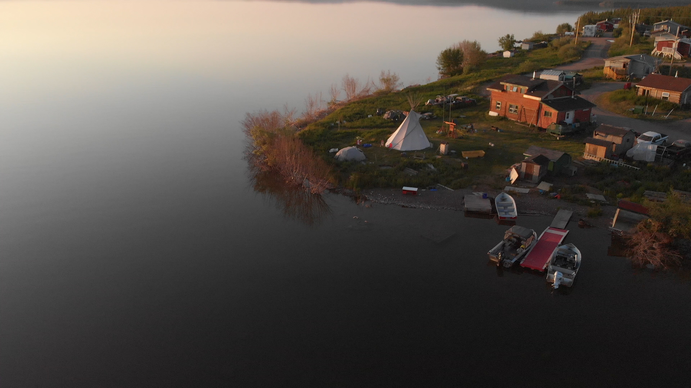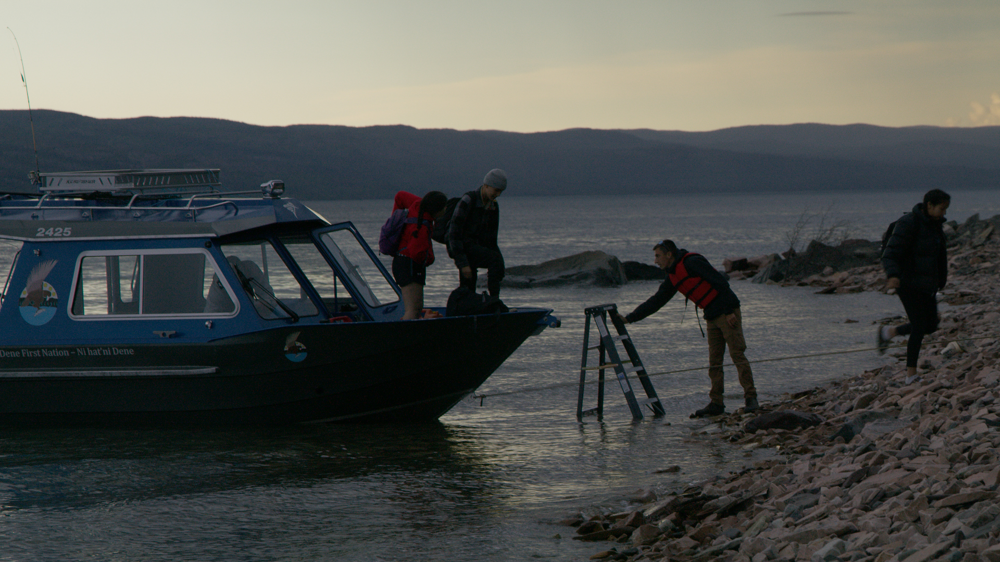
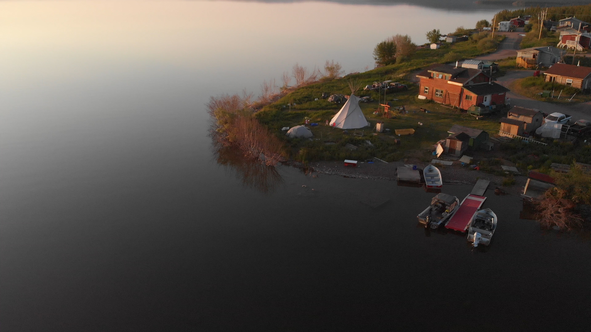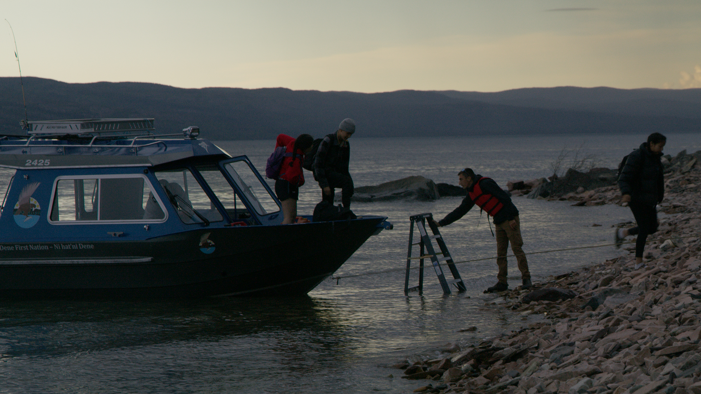Watchers of the Land
Client: Nat Geo
Director: Christine Lin


Nostalgic Innovation
Client: Tattooed Chef
Director: Jonah Moshammer
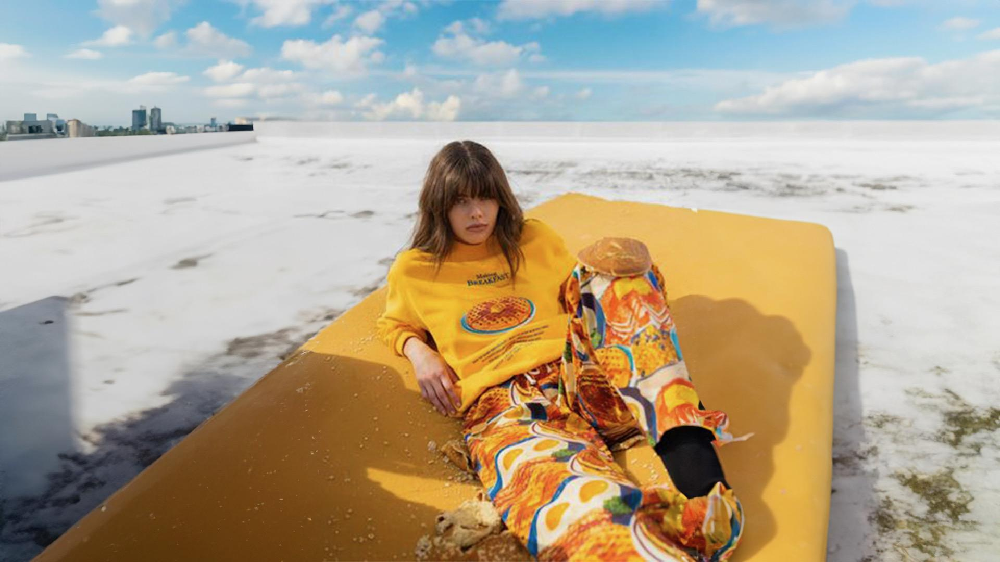
Flan SS24
Client: Flan Labs
Director: Jimi James
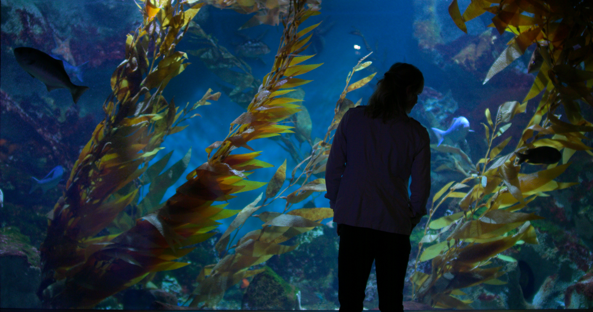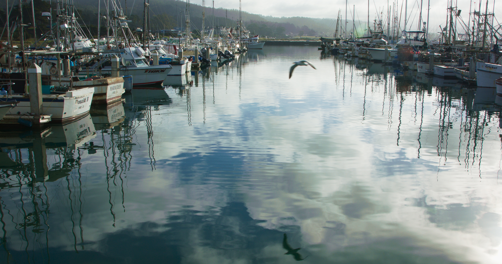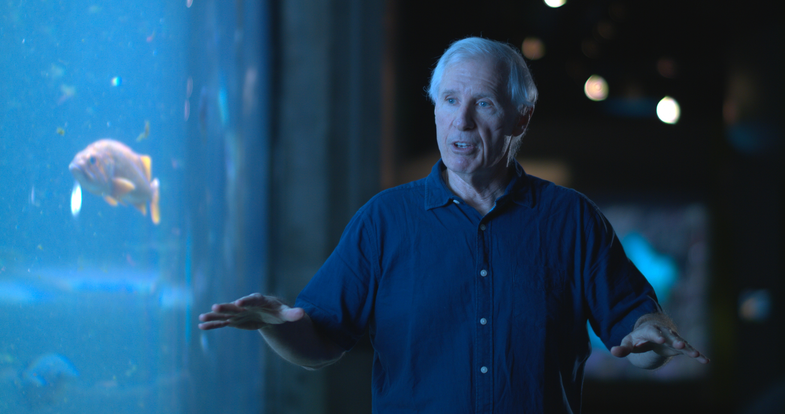
Sugarcane To Squalene
Client: BBC StoryWorks
Director: Jenny He
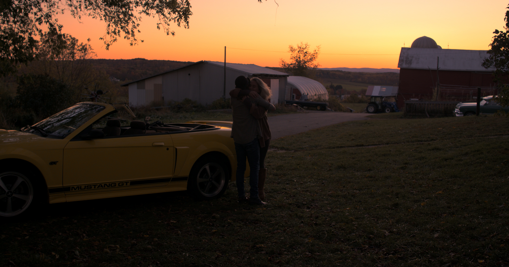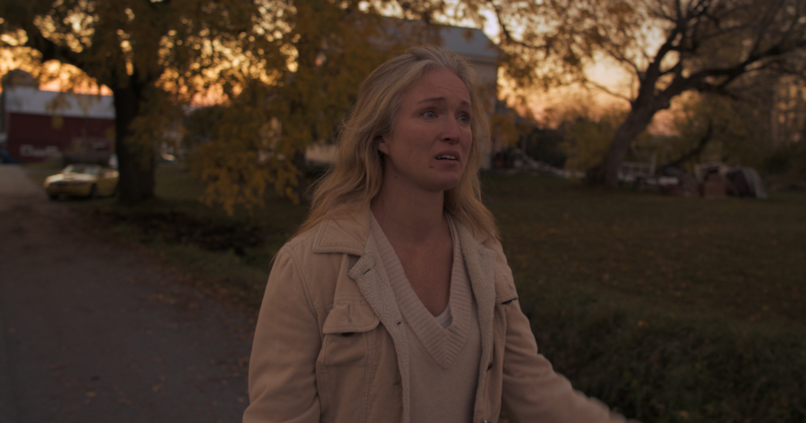
Born
Artist: Sawyer Fredericks
Director: Jenny He
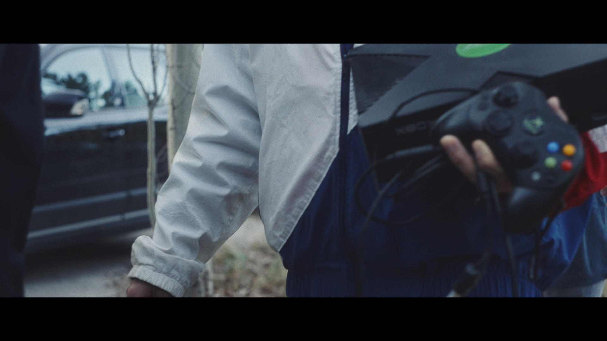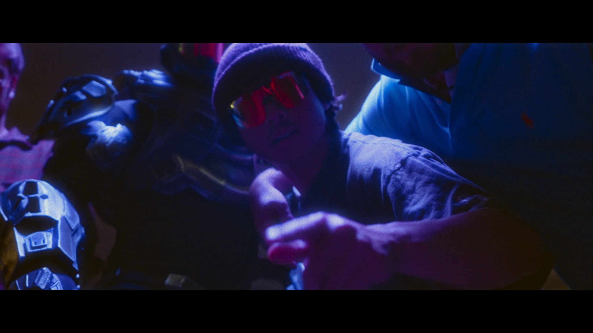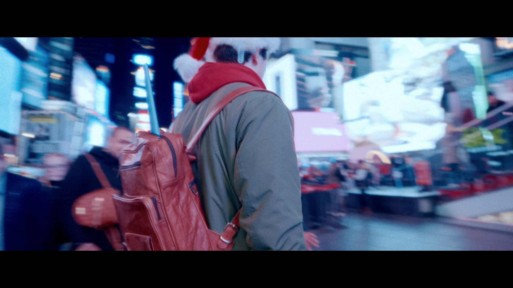
Haloday
Artist: Taquin
Director: Taquin Krug
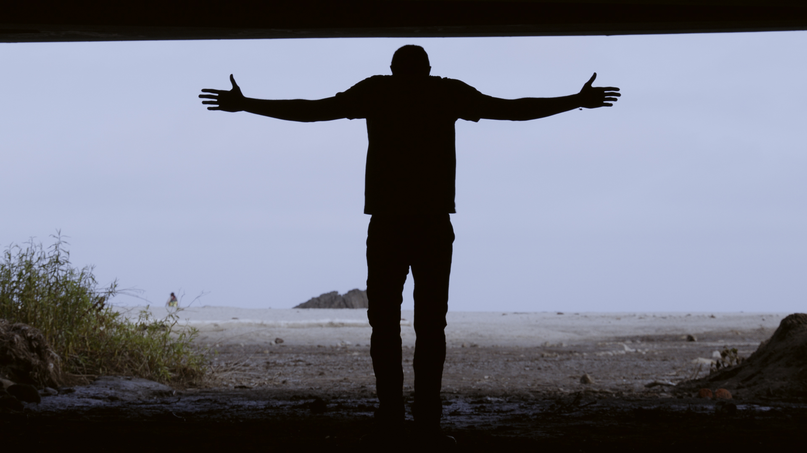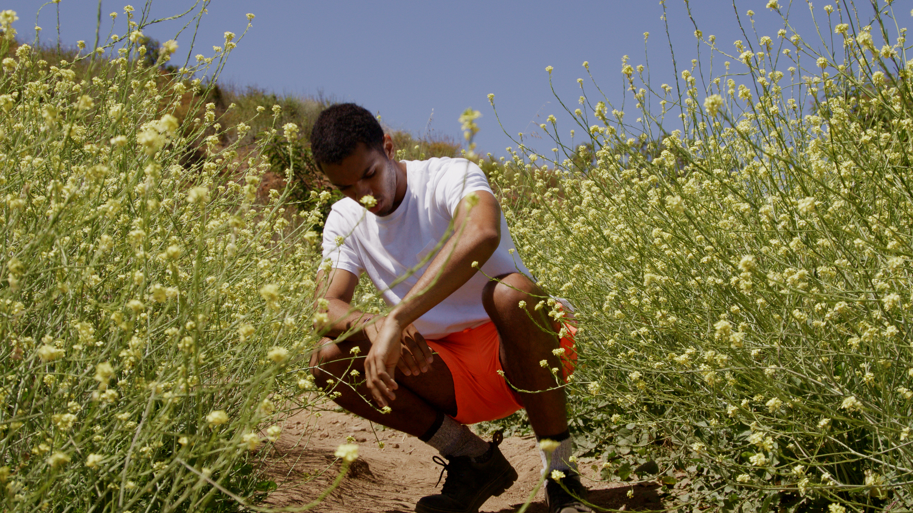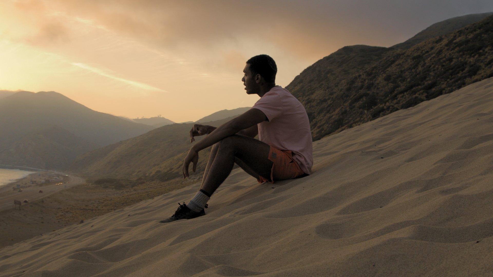
The Perfect Touc of Darkness
Artist: daydream Masi
Director: Sam Stulin